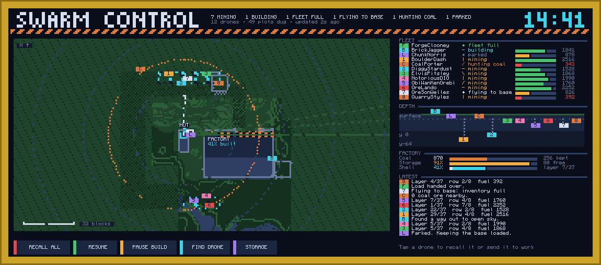
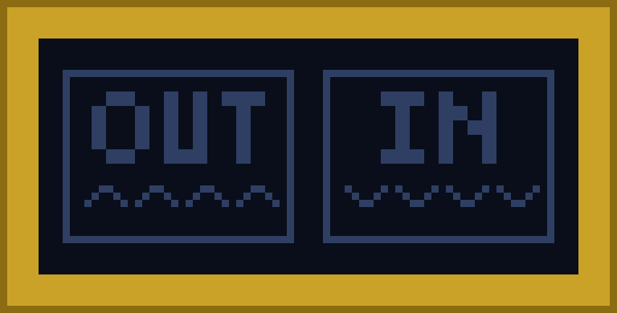
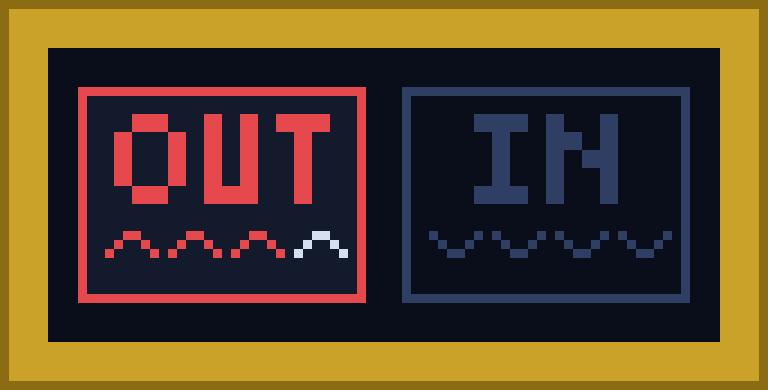
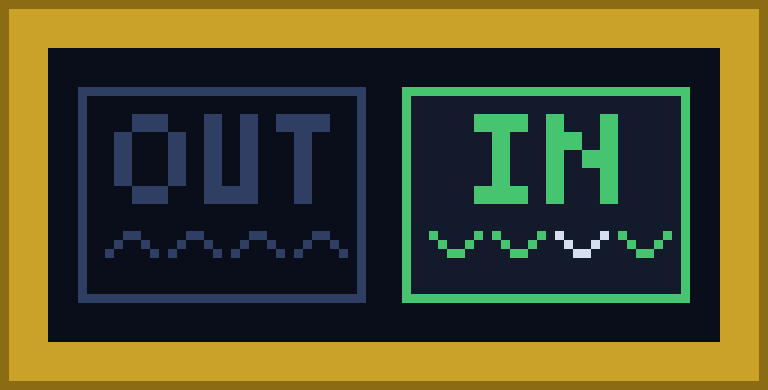
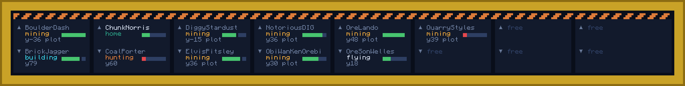
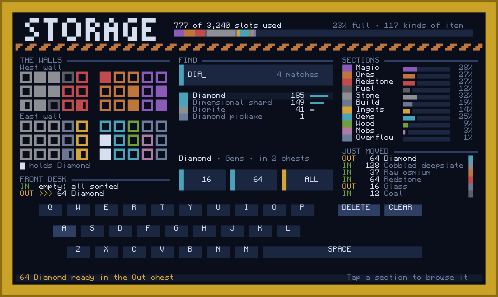

The control room screens
These aren't drawings of what the monitors might look like. They're what the real screen program (dash.lua) draws, run in a simulated advanced monitor and rendered with CC: Tweaked's own font, so each picture is what the monitor will show pixel for pixel. The data is the live swarm from a few minutes ago.
The map wall
Control tower, top floor · 9 × 4 advanced monitors · 185 × 52 characters, 370 × 156 pixels

- Chips, not names. Every drone has its own chip: its own colour plus a number (miners) or a letter (B builder, C coal hunter, L chunk loader, F factory). The same chip marks it on the map, in the fleet list, on the depth gauge and beside its latest message.
- Depth gauge. A slice through the ground from the surface to bedrock, with every drone at its own depth, so the map no longer needs depth labels.
- The map is one pixel per block, north up, with all the ground drawn. Scanned land gets contours, trees and water; dug plots shade the land darker.
- What moves: the radar sweep, and a ping from each drone as it passes; the outline round every plot being dug; the dotted line and trail of a drone flying home; the hazard strip and the lane stripes; a spinner beside every working drone; a glint along the build bar; the clock's colon.
- What flashes: a fuel figure under 400, and storage over 90% full.
- Touch: the buttons, any chip on the map, any row in the fleet list.
- A frame takes about 20 ms to draw, so four a second is no strain on the server.
Gate lights
Over each lane gate, both ends of the building · 2 × 1 advanced monitor, facing out



Each track has its own half: at the west gate the back track leaves (OUT) and the front track arrives (IN); at the east gate it's the other way round. The chevrons step every half second while a drone is in the gate.
The rack's name board
Over the drone rack in the launch bay · 8 × 1 advanced monitor, facing the bay

One column per rack column, upper slot (▲) and lower slot (▼). A drone at home is lit and says home. One out at work shows what it's doing, its depth and its fuel. Empty slots say free, ready for the next drone crafter1 builds.
The storage screen
Storage room front desk · 5 × 3 advanced monitor · 100 × 38 characters · its own palette

- The walls: every double chest is a tile in its section's colour that fills up as the chest does. Search for something and the chests holding it blink, so you can also just walk over and grab it.
- Find: type on the keycaps, tap a result, then 16, 64 or ALL. The front desk line shows it on its way to the Out chest.
- Header bar: the whole store as one bar, a slice per section, so you see at a glance what's taking the room.
- Sections show how full each is (a section over 90% flashes); tap one to browse it. Just moved lists the last things sorted in or handed out.
- This monitor has its own palette: the section colours from the storage plan, so screen and chests match.
Why it can look like this
ATM10 has no screen or GPU mod for CC, only CC: Tweaked and Advanced Peripherals, so there's no HTML on a monitor. Three things that are standard CC make the difference:
- Our own colours. Each monitor takes any 16 colours we give it. This is the dark sci-fi set used here:
- Half-size text, which fits 185 characters across the wall.
- Pixels inside characters. CC has 32 special characters that each show a 2 × 3 block. With them, every character cell becomes six pixels in two colours, and that's how the map, the bars, the big lettering and the hazard stripes are drawn.